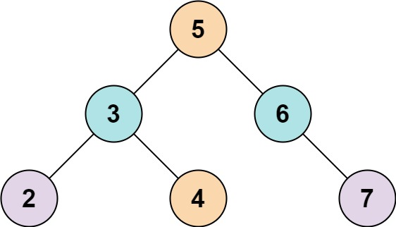
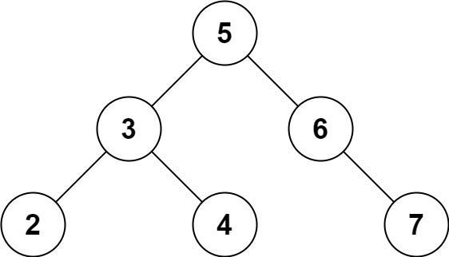

653. 两数之和 IV - 输入二叉搜索树
中序遍历把 BST 摊平成升序数组，再套经典的两数之和：首尾双指针，和大收右、和小进左。
思路
- BST 中序遍历得到升序数组
vals，问题变成「有序数组找两数之和」。 - 双指针
l、r：sum > k收r，sum < k进l，l == r还没凑出就是不存在。 - 命中即返回
true；数组长度 1 时没有两个不同元素，直接false。
图解
最优解
1import java.util.*;2 3class Solution {4 public boolean findTarget(TreeNode root, int k) {5 List<Integer> vals = new ArrayList<>();6 inorder(root, vals);7 // 升序数组上首尾双指针8 int l = 0, r = vals.size() - 1;9 while (l < r) {10 int sum = vals.get(l) + vals.get(r);11 if (sum == k) return true;12 if (sum > k) r--;13 else l++;14 }15 return false;16 }17 18 private void inorder(TreeNode node, List<Integer> vals) {19 if (node == null) return;20 inorder(node.left, vals);21 vals.add(node.val); // 中序遍历 BST 恰好得到升序数组22 inorder(node.right, vals);23 }24}题目
给定一个二叉搜索树 root 和一个目标结果 k，如果二叉搜索树中存在两个元素且它们的和等于给定的目标结果，则返回 true。
示例 1：

输入: root = [5,3,6,2,4,null,7], k = 9 输出: true
示例 2：

输入: root = [5,3,6,2,4,null,7], k = 28 输出: false
提示:
- 二叉树的节点个数的范围是
[1, 104]. -104 <= Node.val <= 104- 题目数据保证，输入的
root是一棵 有效 的二叉搜索树 -105 <= k <= 105
题面取自力扣当前版本。
数据快照 2026-11-04。题面版权归力扣所有，本站点仅供本人学习使用，请勿对外发布。